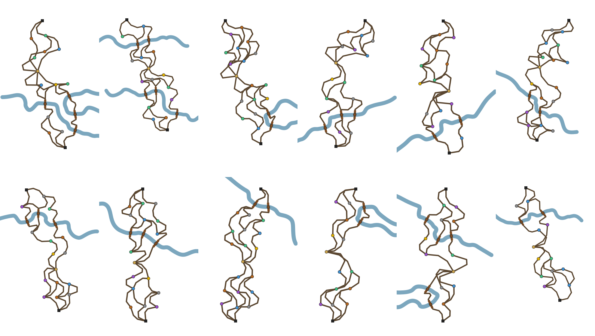
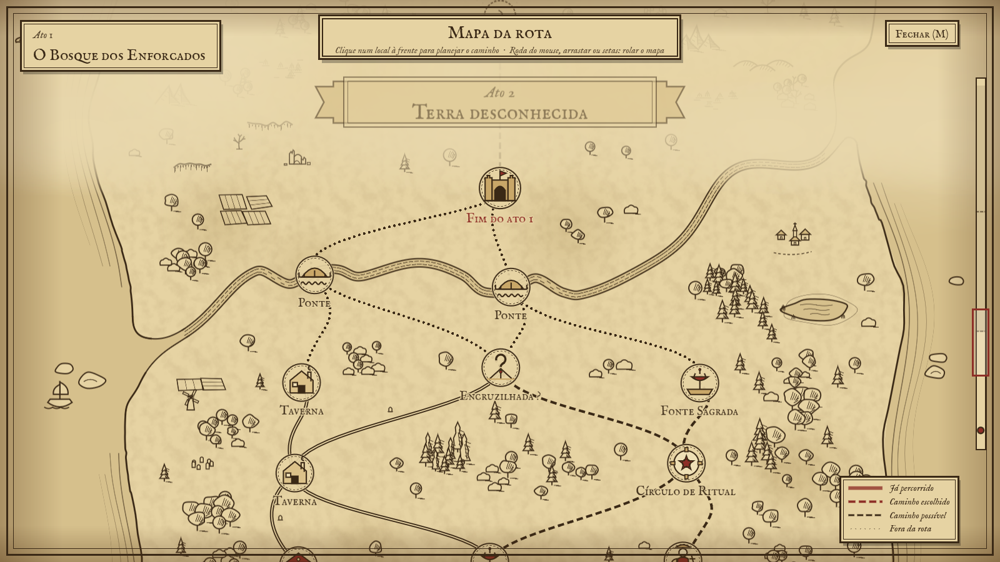
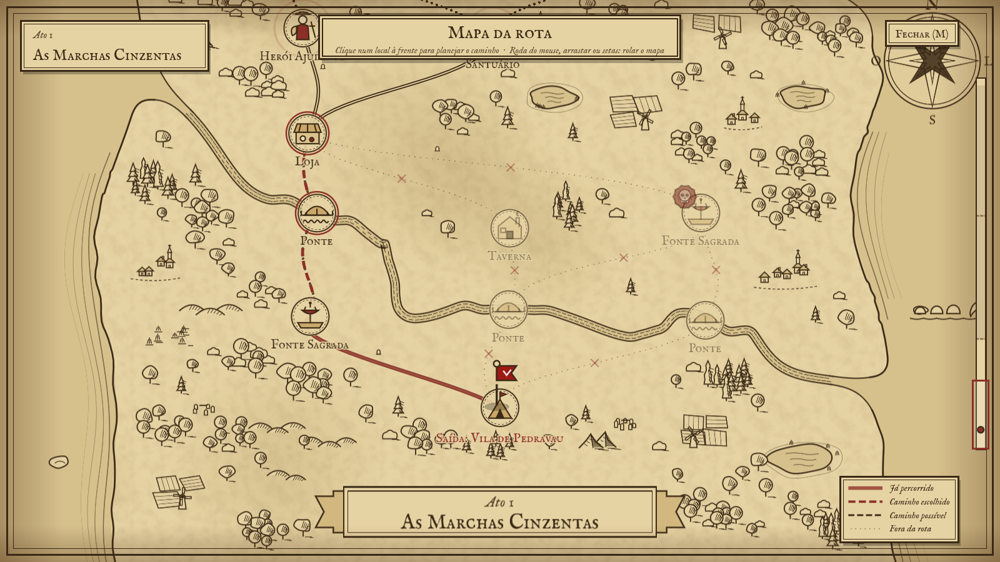
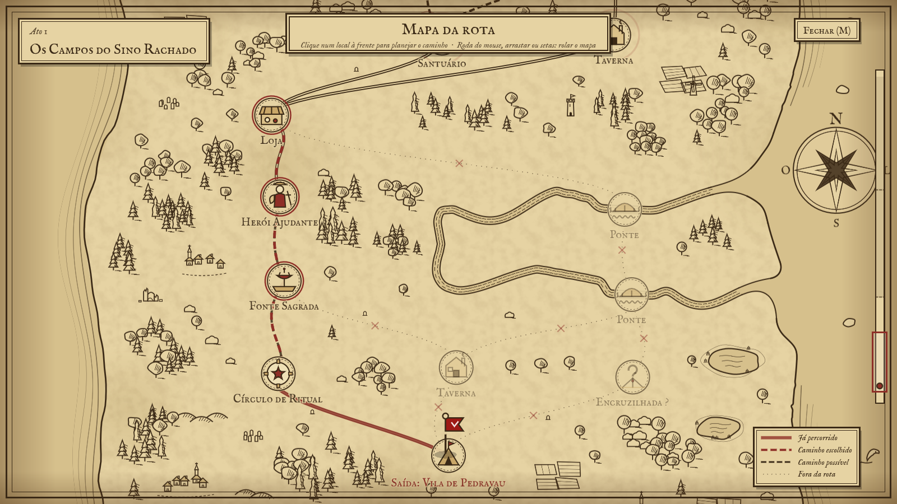
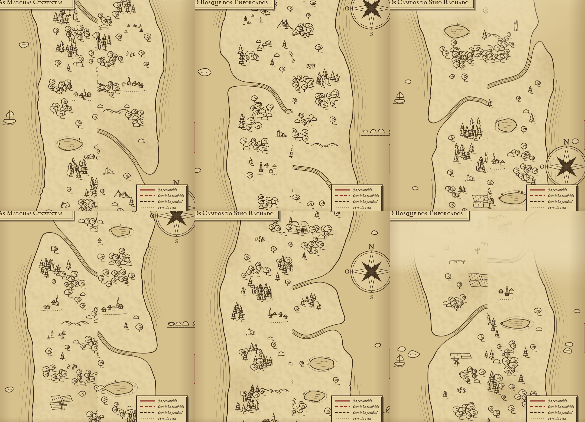
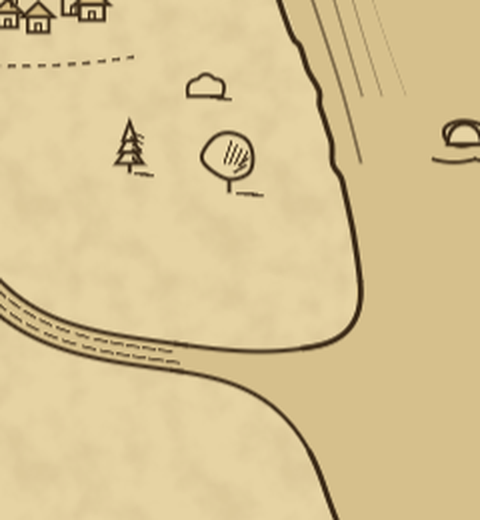

Rio e pontes: traçados gerados
16/11/2026 — primeiro passo de docs/RIO_E_PONTES.md: só o gerador e o mapa do jogador. Ainda não há regra de água na simulação nem arte nova no mundo.
12 mapas reais vistos de cima
Sementes 1 a 4, atos 1 a 3, em metros e na escala real (rio de 10 m). Marrom: estrada; azul: rio; traço marrom grosso: ponte; bolinhas: locais (marrom-escuro = Ponte).

No mapa do jogador (gravura)
Rio natural (16/11): curvas largas e irregulares, calmas perto de cada ponte, sem encostar nas trilhas. A maioria atravessa inclinada, para um lado ou para o outro. No mar, o rio abre numa foz: as margens se alargam e terminam na praia, que fica aberta na boca do rio.





Números (360 atos sorteados)
- Nenhum ato sem rio. Quando a estrada sorteada não comporta rio, o jogo sorteia outra estrada para o ato.
- Pontes por ato: 2 em 46%, 3 em 24%, 4 em 13% e 5 em 17%. Nunca mais de 5.
- Atos com 2 rios: 24%. Formatos: 73% atravessam (48% deles cortando a estrada em fileiras diferentes; os outros ficam inclinados fora da estrada), 27% vão e voltam.
- Rio que atravessa: toda rota passa por exatamente 1 ponte. Vai e volta: 0 ou 2.
- Gerar um ato leva em média ~160 ms (na troca de ato).